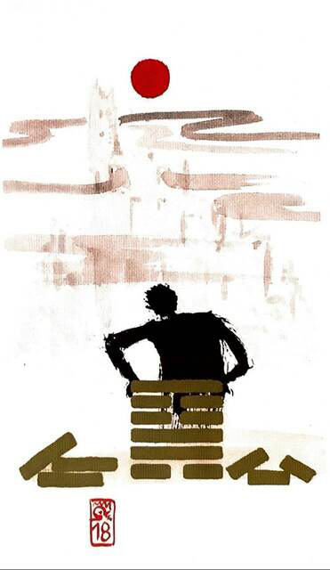

산풍고(벌레 고)
대흉괘 3
기운이 막히면 사고(일)이 생긴다
낡은 것을 수리하고 새롭게 개혁해야 한다벽돌을 쌓아도 쌓아도 무너지고 곪아서더 이상 사용하지 못하는 상황을 표현한 그림
부패한 것에 대한 작업.과거의 실수를 바로 잡다.수리하다.대혁명.어려움.답답함.고통.고난.깊은 상처
연애운
권태감.깊은 상처.쇼윈도 부부.꽉 막힌 답답함
사업운
여러가지 일로 꼬여 답답함. 새로운 일은 상황이 변할 때 까지 중단.차근차근 풀어아 함
속마음
썸마음대로 되지 않는다고 생각하는 마음.답답한 마음
1년 이상상처 받고 말 못하고 쌓인 스트레스..권태스러운 마음
이별 후고통스러운 마음.무너지는 마음
솔로연애운
새로운 이성 생길 확률 낮다
건강운
자궁.내부장기.고질병.심장.신경계통.건강검진필요